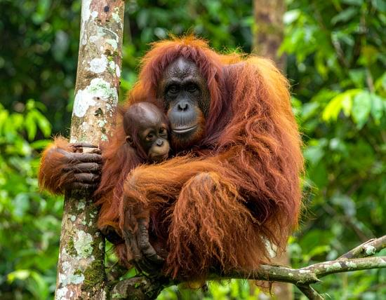

Małpa
Małpy szerokonose występują w obydwu Amerykach i nazywane są małpami Nowego Świata. Współcześnie żyjące małpy wąskonose znane są z Azji i Afryki, dawniej występowały również w Europie (obecnie tylko makak berberyjski żyje na Gibraltarze) – nazywane są małpami Starego Świata. Należący do tego taksonu rodzaj człowiek Homo rozpowszechnił się na całym świecie, jedyny współczesny gatunek – człowiek rozumny H. sapiens występuje na wszystkich kontynentach i stworzył wysoko rozwiniętą cywilizację, umożliwiającą przebywanie osobnikom tego gatunku także poza Ziemią.